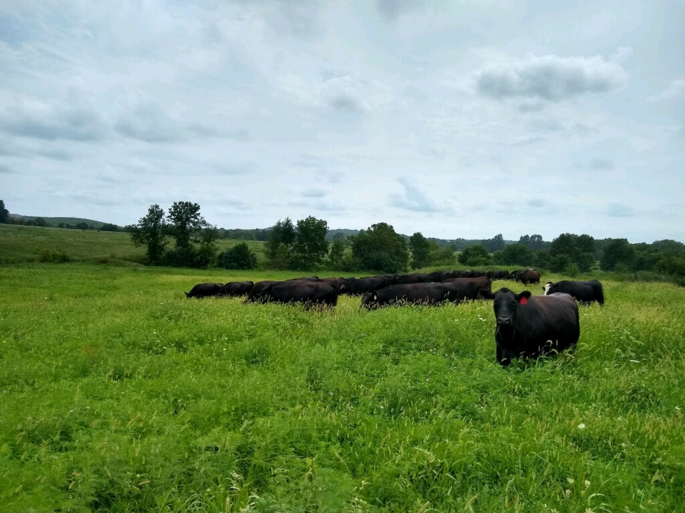

About Us

Family owned and operated in Warrensburg, MO
Turnbow Livestock is located on the Turnbow family farm in Warrensburg, Johnson County, Missouri. What started as a hobby for us as a family while working full-time jobs swiftly became a larger passion in our lives.
At Turnbow Livestock, our cattle are part of the family, too. They are born and pasture-raised on our land with no antibiotics, hormones, or steroids.
We offer a variety of beef products currently available for local delivery and purchase at farmers markets. Find us at the Warrensburg and Knob Noster Farmers Markets on Saturdays!